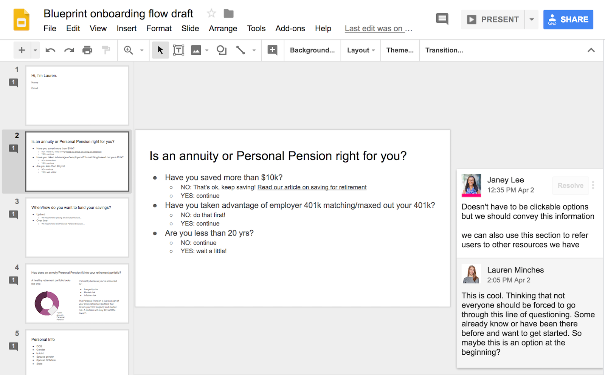

Designing an introduction to the Personal Pension
My role: Product designer
Blueprint Income is a fintech startup based in New York City that aims to change the way we prepare for retirement. They offer a Personal Pension that allows users to make small monthly contributions that buy them multiple “mini-annuities”. These eventually add up to become a Personal Pension: a guaranteed, reliable source of income that lasts one’s entire life, and that is protected from market volatility.
Design challenge
How might we communicate the value of a Personal Pension to someone who isn’t familiar with the concept through an onboarding experience?
1. Research
Given my limited time, I began by working with Blueprint Income’s VP of Product and co-founder (who’s a CFA) to better understand the prospective customer. I wanted to understand:
- How would we explain the Personal Pension to someone who came to you for retirement advice?
- Who are our users, and where are they in their ‘journey’ of thinking about retirement?
- What are users trying to accomplish when they visit our site? Where have they come from?
I learned that I should be targeting a wide range of users with different levels of familiarity with retirement savings and annuities.
2. UX design and structure
I began by designing the journey using my favorite low-fidelity prototyping tool, Google Slides. Working on Slides helped our team craft the right journey and design the experience on a conceptual level.
We focused on designing a conversational UI that would guide a user through the process.
I used Usertesting.com to quickly validate our ideas. After ensuring we were on the right path, I worked with the product manager to map out all the possible user journeys.
3. Low, then high-fidelity visual designs
I used Blueprint Income’s existing design guidelines to start designing in higher fidelity. I began with basic wireframes (view an early prototype here) which I used for gathering feedback, then used Blueprint Income’s brand guidelines to develop the final UI.

Impact
I handed off my high-fidelity designs to the Blueprint Income team, so that they could continue gathering feedback and iterating upon them. I learned how important it is to keep simplifying your messaging until the value proposition is absolutely clear to a user. It can be difficult, especially when onboarding users onto (relatively) complicated financial products, but I thoroughly enjoyed working through the challenge with my incredibly experienced and bright team members!